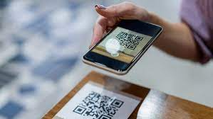
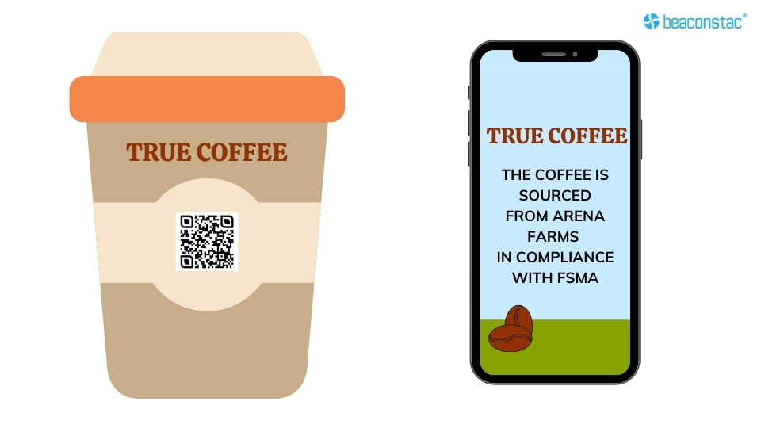
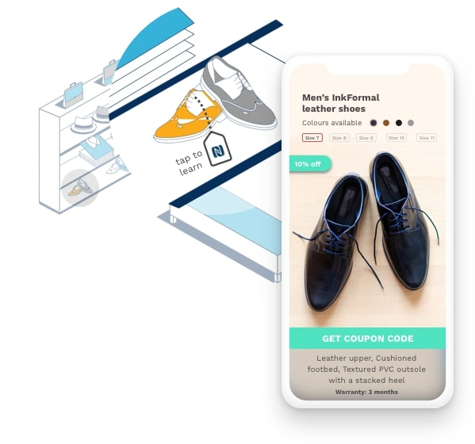
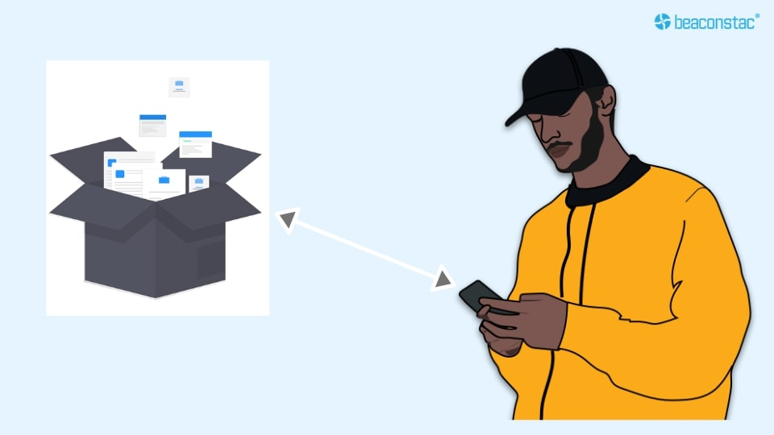

History of QR Codes
The first QR code system was invented in 1994 by the Japanese company Denso Wave, a Toyota subsidiary.
They needed a more accurate way to track vehicles and parts during the manufacturing process. To achieve this, they developed a type of barcode that could encode kanji, kana, and alphanumeric characters.
Standard barcodes can only be read in one direction top to bottom. That means they can only store a small amount of information, usually in an alphanumeric format. But a QR code is read in two directions top to bottom and right to left. This allows it to house significantly more data.
The data stored in a QR code can include website URLs, phone numbers, or up to 4,000 characters of text.
The development team behind the QR code wanted to make the code easy to scan so that operatives did not waste time getting it at the right angle. They also wanted it to have a distinctive design to make it easy to identify. This led them to choose the iconic square shape that is still used today.
Denso Wave made their QR code publicly available and declared they would not exercise their patent rights. This meant anyone could make and use QR codes.
Initial uptake of the idea was slow; however, in 2002, the first mobile phones containing built-in QR readers were marketed in Japan. The use of smartphones led to an increase in the number of companies using QR codes.
In 2020, Denso Wave continued to improve on their original design. Their new QR codes include traceability, brand protection, and anti-forgery measures. There are many new uses for the QR code, from transferring payments to determining objects' positions within augmented reality.
What Customers know with QR on Product Package
3 ways to boost sales and increase customer retention using QR Codes on product packaging
What is a Packaging QR Code?
A packaging QR Code is one that communicates relevant product details with consumers to help them learn more about the product, its benefits, and its uses. Packaging QR Codes serve as a valuable medium for sharing all kinds of information with consumers at every stage of the consumer buying journey.
Smart Packaging: NFC + RFID
Aside from technologies such as QR Codes and the Internet of Things (IoT), NFC (Near-Field Communication) and RFID (Radio Frequency Identification) have also proven to be a great potential in the smart packaging industry.
The global market for NFC technology is expected to reach $44 billion by 2024. The use-cases of NFC tags and RFID in smart packaging are immense and supremely useful.
Customers are willing to share their information with brands when accessing online content via NFC tags and RFID. This, in turn, allows brands to track their interactions with the product in real-time, fine-tune consumer profiles, and measure a campaign’s performance for a better output.
Due to the native implementation of QR Codes and NFC tags in all the latest smartphones this day, smart packaging is now easy to use and widely accessible. Not just this, changing consumer behavior also played a key role in this movement.
In the coming years, it’s a no-brainer that technologies such as NFC tags, RFID and QR Codes will become even more common and, in particular, more brands authenticating a two-way conversation channel with their target consumers built around data, insights, and personalization.
QR Codes: The future of Smart Packaging
The demand for smart packaging is undoubtedly on the rise, because of its ability to provide better transparency to customers to combat food waste, and counterfeit.
This can be used to provide real-time information to consumers and involve an interesting loyalty program to keep them engaging.
This clearly means that smart packaging using QR Codes (& NFC tags) for CPG (Consumer Packaged Goods) is here to stay. QR Codes coupled with AR (Augmented Reality) is changing the way consumers interact with smart packaging. The technology creates an elevated level of personalized shopping experience that blurs the line between eCommerce and brick-and-mortar retailing.
